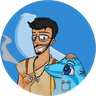

OdedSVR · המסעסאבתון GTA 6
כל משימה מהסאבתון, במקום שבו היא קרתה, וכל מה שקרה בדרך: מיתות, רכבים, החלטות של הצ׳אט וסטוריז שלכם. גוללים כדי לנסוע לאורך המסלול, לוחצים על סימן כדי לפתוח אותו.
גוללים למעלה כדי להתקדם, ולמטה כדי לחזורגוררים כדי לטייל במפה, צובטים לזום, לוחצים על עצירה כדי לפתוח